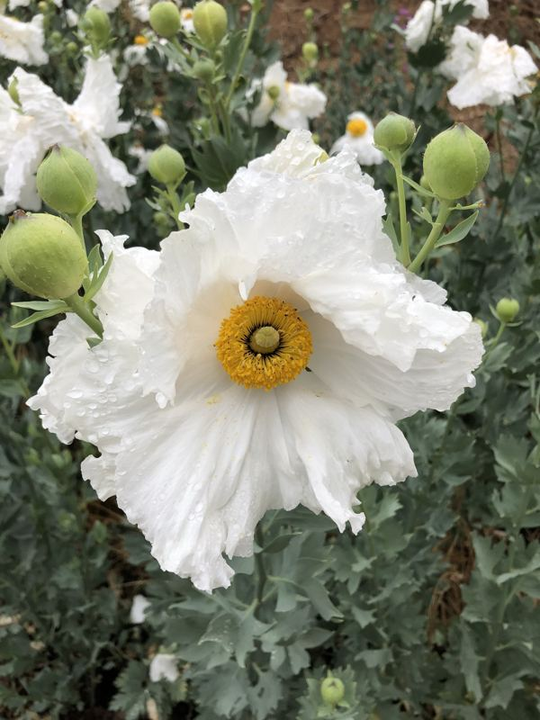

About us

For a long time, plants were just a green blur. Then we started paying attention. We noticed where things grow, the patterns they make, the textures, the quiet colors most people walk past. Once you see it, you can't unsee it. And one question kept coming back: California's native plants are beautiful, so why don't more of us grow them?
So we went deeper. We learned, we worked, and we spent years in the native plant world. But at home, the neighborhood never changed. If anything it got worse, with more concrete, more fake grass, and more open land across the Inland Empire disappearing. It would have been easy to give up. Instead we asked ourselves a simpler question. If not us, then who?
We started growing. First for ourselves, then for family, then for the land around us. Inland Empire Native Nursery came out of that. It's for anyone who has stopped, looked closer, and wanted something better to grow right where they live.